Check monotonicity of well positions across groups
Source:R/check_well_positions.R
check_well_positions.Rdcheck_well_positions checks if well positions across groups, i.e.
experiments, monotonically increase or decrease with timepoints measured.
check_monotonicity checks whether the values in a numeric vector are monotonically
increasing or decreasing.
Usage
check_well_positions(
input_data,
x_var = "Timepoint",
y_var = "Value",
grouping = "Position",
v_var = "Validity",
wp_var = "Position"
)
check_monotonicity(vec)Arguments
- input_data
A data.frame containing the input data, e.g. from a function call to
tidy_single_plate,tidy_plates_via_paramsortidy_plates_via_prompts.- x_var
A character string specifying the variable to be plotted on the x-axis. Defaults to 'Timepoint'.
- y_var
A character string specifying the variable to be plotted on the y-axis. Defaults to 'Value'.
- grouping
A vector of character strings specifying the grouping variables. Defaults to 'Position' if no grouping is provided.
- v_var
A character string specifying the validity information. Usually a column with all rows being 'valid'. Rows are set to 'invalid' based on user selection. Defaults to "Validity".
- wp_var
A character string specifying the column providing the well positions. Defaults to "Position".
- vec
A numeric vector to be checked for monotonicity.
Value
check_well_positions returns a subset of the input data containing
only the data from non-monotonic groups, if non-monotonic groups are detected.
Otherwise, NULL is returned.
check_monotonicity returns a logical value.
Details
If non-monotonic groups of well positions are detected, check_well_positions
plots them as line graphs and returns a list with both the corresponding subset of the data for
further inspection and the input data adjusted for invalid well positions from visual inspection.
check_monotonicity checks if all differences between consecutive elements
in the vector 'vec' are non-negative (indicating monotonic non-decreasing
behavior) or non-positive (indicating monotonic non-increasing behavior).
Examples
# Generate example data
set.seed(123)
df <- data.frame(Position = rep(1:21, 2),
Value = c(1:21, sample(1:21,21, TRUE)),
Timepoint = rep(paste0("T",1:3),14),
Validity = "valid",
Group_1 = rep(LETTERS[1:2], each=21),
Group_2 = rep(letters[1:14], each = 3))
# All groups behave monotonically
check_well_positions(df[df$Group_1 == "A",],
x_var = "Timepoint",
y_var = "Value",
grouping = c("Group_1", "Group_2"))
#> All groups have monotonic behavior. Returning original input data.
#> Do you want to see all plots? (y/n):
#> Error in if (tolower(choice) == "y") { for (group_name in names(data)) { group <- data[[group_name]] p <- ggplot(group, aes(x = !!sym(x_var), y = !!sym(y_var), group = 1)) + geom_line() + geom_point(size = 5) + labs(title = paste("Case:", group_name)) + theme_minimal() print(p) cat("Press Enter to continue...") invisible(readLines(n = 1)) }}: argument is of length zero
# Six groups behave non-monotonically
check_well_positions(df[df$Group_1 == "B",],
x_var = "Timepoint",
y_var = "Value",
grouping = c("Group_1", "Group_2"))
#> Non-monotonic well positions detected for case: B.h . Do you want to set this group as valid? (y/n):
#> Error in if (tolower(choice) == "y") { cat("Case", group_name, "set as valid\n") non_monotonic_groups <- non_monotonic_groups[non_monotonic_groups != group_name]} else { cat("Continuing without changes for case:", group_name, "\n")}: argument is of length zero

# Check if a vector is monotonically increasing (will return TRUE)
check_monotonicity(c(1, 2, 3, 4, 5))
#> [1] TRUE
# Check if a vector is monotonically decreasing (will return FALSE)
check_monotonicity(c(5, 80, 3, 2, 1))
#> [1] FALSE